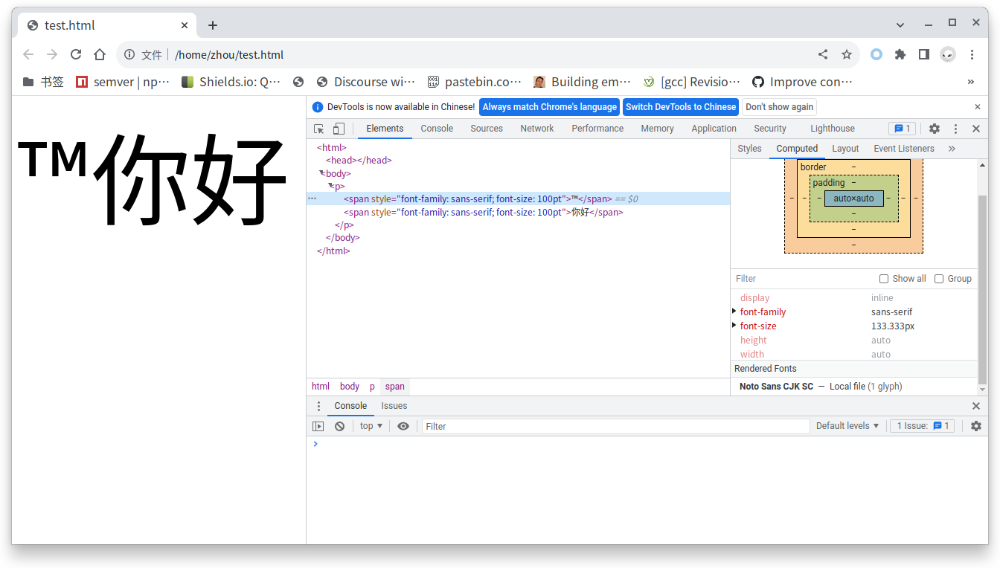

这篇文章是之前两篇关于 fontconfig 文章的后续，前文见第一篇 fontconfig 几个常见的坑，第二篇 Color Emoji in openSUSE。
偶然在网上看到 Alynx Zhou 的Fontconfig 和 Noto Color Emoji 和抗锯齿里面说看过我的文，没想到我对 fontconfig 的研究在中文圈还是排在前头的 ⌣。原来大家对后续还是有期待的。
先说一下我 2020 年写完那两篇文章干什么去了。我在 Color Emoji in openSUSE 里面不是提到过几个 .rb 代码文件嘛，有些人说找不到它们，其实它们在我的 fork 里面：marguerite/fonts-config。后来我又重写了 openSUSE 的 fonts-config, 在 marguerite/fonts-config-ng。可以自动生成 Emoji Glyph 的 Blacklist，也就是 81_emoji_blacklist_glyphs.conf。
但是呢，实际上这种方法在现实中不怎么灵。
<match target="scan">
<test name="family">
<string>Noto Sans CJK SC</string>
</test>
<edit name="charset" mode="assign">
<minus>
<name>charset</name>
<charset>
<int>0x2122</int>
</charset>
</minus>
</edit>
</match>
大家可以看到我在 81_emoji_blacklist_glyphs.conf 里面已经有从 Noto Sans CJK SC 字体减除 0x2122（™）这个 charset leaf 的操作了，但是在 Chromium 浏览器中测试是这样的：
<body>
<p>
<span style="font-family: sans-serif; font-size: 100pt">™</span>
<span style="font-family: sans-serif; font-size: 100pt">你好</span>
</p>
</body>

那个 ™ 码点依然使用 Noto Sans CJK SC 显示。纳尼！™ 不是已经被屏蔽了嘛？
注：charset 字符集，charset leaf 字符集中的一个点。fontconfig 上游是这么定义的。
朴素的 fontconfig 工作流假设
以上 charset minus 的方法源于我（可能也是大多数人）的一个朴素假设：
fontconfig 的工作流程是先扫描(scan match)系统上安装的全部字体，生成一个列表，然后通过 pattern match 调整这个列表，最后使用 font match 调整最终列表中字体的属性，返回给调用它的程序使用。
换句话说，我们假设的是，程序调用 fontconfig 是调用一个完整的工作流，最终返回给程序的字体中没有这个被减掉的 charset leaf。返回的字体可以是 fontconfig 的缓存，也可以是真实的字体但同时返回的字体 charset 属性中没有这个被减掉的 charset leaf，导致程序通过通过 charset 匹配 text 的阶段会失败，从而不去使用这个字体去显示这个字符。
当然了，fontconfig 毕竟不是 fontforge 这样的字体编辑程序，真实的在硬盘上的字体文件里这个字符肯定还是存在的。也许是 fontconfig 在缓存 binary data 的时候就去掉了这个 charset leaf，也许只是在字体属性中去掉了。
我通过 debug 发现这个假设，对也不对。对的地方是在 fontconfig 自己的 utilities 比如 fc-match, fc-list 里，它是对的。错的地方是在别的程序里，调用方式的不同导致这个工作流可能被掐头去尾取中间了。也就是说别的程序可能只是使用了 fontconfig 的 pattern match 阶段，得到字体就万事大吉了。前面的 scan match、后面的 font match 可能根本就没有用。使用 fontconfig 的程序只要 FcConfigReference() 进行空白初始化，而不是 FcConfigReference(own_config) 传自有 config ，都会成功。即使程序实现自己的初始化函数（比如 Chromium），最终也会调用 FcConfigReference() 进行空白初始化。（因为没人会重新实现一份实质空白的 config）
薛定谔的 FontSet
我们前面文章已经说过了，测试 charset minus 方法是否成功的方式有一种是使用：
fc-list "Noto Sans CJK SC" :charset=0x2122
而我还看到过一种方式，就是依云的 使用 fontconfig 进行字体查询。
首先我复制了一份 fc-list.c 的代码（不到万不得已肯定不能 runtime 改系统的 fontconfig 啊），改了以下地方：
printf("%d\n", i);
printf("%d\n", argc);
printf("%s\n", argv[1]);
printf("%s\n", argv[2]);
if (argv[i]) {
pat = FcNameParse ((FcChar8 *) argv[i]);
if (!pat) {
fprintf (stderr, _("Unable to parse the pattern\n"));
return 1;
}
while (argv[++i]) {
if (!os) {
os = FcObjectSetCreate ();
FcObjectSetAdd (os, argv[i]);
}
}
}
首先我需要知道 fc-lsit 把我的 Noto Sans CJK SC 和 :charset=0x2122 都识别成什么了。结果是把字体名字识别成 pattern：
pat = FcNameParse((FcChar8 *) argv[i]);
把 :charset=0x2122 识别成了（这里说以下这个冒号就是个语法糖，表示“全部字体”，相当于 : charset=0x2122，也可以有别的写法比如 : family lang）：
os = FcObjectSetCreate();
然后后面的：
fs = FcFontList (0, pat, os);
得到 FontSet。
FcFontList 会内部调用 FcFontSetList (config, sets, nsets, p, os);，这里的 config 是 config = FcConfigReference (config);, sets 和 nsets是 FcFontList 里定义的并传过来的，我们传过来的 pattern 和 objectset 在这里起到的是筛选的作用，如果 sets->fonts[n] 不满足 pattern，loop 就会 continue, 相当于是丢弃了这个 font。
而 FcFontSetList 使用 os 是在 if (!FcListAppend (&table, s->fonts[f], os, lang)) (如果没有 os，FcFontSetList 在前面会创建一个空的 os)。这里的 &table 是 FcListHashTable, 最终是通过 FcFontSetAdd 把 table 里的 font 加到 ret = FcFontSetCreate(); 这个新建的 FontSet 中并返回这个新建的 ret，作为 FcFontList 返回的 FontSet。
所以这里 FcListAppend 的作用是通过 objectset 和 lang 去判断这个字体可不可以加入到最终的 FontSet，最终是调用到了 FcPatternObjectFindElt，结果返回 0。经过一番 debug，发现是因为
e = FcPatternObjectFindElt (font, FcObjectFromName (os->objects[o]));
if (e)
FcObjectFromName 取不到值。这里的 os->objects[o] 就是 :charset=0x2122，为什么会取不到值呢？
阅读了一番代码发现，FcObjectFromName 是从名字变为 FcObject 也就是 int，它要的是 charset，family 这样的规范化 name，正常是不应该接受 :charset=0x2122 的 233，看来是作者少了一个检查，或者认为 FcPatternObjectFindElt 本身就是检查。又各种确认一番，原来是我这里写错了：
fc-list "Noto Sans CJK SC" :charset=0x2122
应该是：
fc-lsit "Noto Sans CJK SC:charset=0x2122"
或者说那里是没有空格的。看来 fontconfig 被称为 Linux 下字体配置的难度天花板不是没有理由的。
那就只能重来了，这回是把：
Noto Sans CJK SC:charset=0x2122
整个识别为 pat。接下来是 FcListPatternMatchAny (const FcPattern *p, const FcPattern *font)->FcListValueListMatchAny:
if (FcConfigCompareValue (&fnt->value,
FC_OP (FcOpListing, FcOpFlagIgnoreBlanks),
&pat->value))
最后因为 OP 是 FcOpListing，类型是 FcTypeCharSet，是调用了 FcCharSetIsSubset 解出来没有这个 charset leaf 的。
这里需要注意的是 FcListPatternMatchAny 以后接受的参数都是指针，而真正用于比较的 *font 是来自 config：
if (config->fonts[FcSetSystem])
sets[nsets++] = config->fonts[FcSetSystem];
if (config->fonts[FcSetApplication])
sets[nsets++] = config->fonts[FcSetApplication];
也就是上面 config = FcConfigReference(0) ，对它的分析放在以后。
下面是结论：
通过 pattern 中包含 :charset=0x2122 得到的 FontSet 会是应用了 charset minus 的结果。
说人话就是显式地使用 :charset=0x2122 就一定会精确地得到含有某个 charset leaf 的字体，即返回结果去掉了减除该 charset leaf 的字体。不显式使用 :charset=0x2122 返回 Noto Sans CJK SC 也符合 fc-list 的初衷，你不要 charset 只要 Noto Sans CJK SC 肯定会给你返回它。
那么隐式的调用呢？我们来看依云的代码：
FcFontSet* fs = NULL;
FcPattern* pat = NULL;
FcObjectSet* os = NULL;
FcChar8* strpat = (FcChar8*)":lang=zh";
pat = FcNameParse(strpat);
os = FcObjectSetBuild(FC_FAMILY, FC_CHARSET, FC_FILE, (char *)0);
fs = FcFontList(0, pat, os);
他这里的 pattern 是 :lang=zh，意思是取全部 lang=zh 的字体，所以他最终的 FontSet 里面包含了 “Noto Sans CJK SC”。接着 FcPatternGetCharSet 取 Charset，却包含了 ™ 字符：
if(FcPatternGetCharSet(fs->fonts[i], FC_CHARSET, 0, &cs) != FcResultMatch){
这就有点不对了啊。因为我们如果显式去使用 :charset=0x2122，是对 FontSet 进行修改，如果 FontSet 里的 Noto Sans CJK SC含有这个 charset leaf肯定不会去掉它的。但隐式地先取到 FontSet，再去调用 FcPatternGetCharset，得到的结果确是 FontSet 里含有这个 charset leaf。
FcResult
FcPatternGetCharSet(const FcPattern *p, const char *object, int id, FcCharSet **c) {
FcValue v;
FcResult r;
r = FcPatternGet (p, object, id, &v);
if (r != FcResultMatch)
return r;
if (v.type != FcTypeCharSet)
return FcResultTypeMismatch;
*c = (FcCharSet *)v.u.c;
return FcResultMatch;
}
同时，FcPatternGetCharset 是一个 get 函数，是不会修改 FontSet 的。
这个留着后续研究了。暂时只能说隐式调用不行 行，方法在后续。
fc-match 分析
双猫的Linux fontconfig 的字体匹配机制对 fc-match 已经有过一些分析了，比如 FcConfigSubstitute 是最重要的函数。
fc-match.c 一开始还是跟 fc-list.c 一样的，常规解析 pattern 和 objectset。
然后是调用：
FcConfigSubstitute (0, pat, FcMatchPattern);
FcDefaultSubstitute (pat);
fs = FcFontSetCreate ();
再往下是双猫说过的分别针对 sort/all 和默认 match 的处理，主要是调用 FcFontSort 和 FcFontMatch得到 font_pattern，然后通过 FcFontSetAdd 加入到 FontSet。
然后是针对得到的 FontSet 逐个的应用 FcPatternFilter过滤 os，这样最后就会只输出某个属性比如 family。
对它的分析引入了更多的问题，比如，fc-match 里面没有看到 FcFontList 函数，它的 FontSet 完全是根据 FcConfigSubstitute 的结果做的。那么系统上的字体是在 FcConfigSubstitute 的哪步加进来的呢？
我们也知道加了 :charset=0x2122 去匹配是返回空的：
$ fc-match -s "sans-serif:charset=0x2122"
也就是说，我们得到的 FontSet 里面的字体应该是没有 charset=0x2122 这个字符的。FontSet 肯定是系统上安装的真实字体形成的，那么 FcConfigSubsitute 是怎么把这个 charset leaf 删掉的呢？在缓存时？还是 MatchAny 的时候？而且这中间只经历了一次 FcConfigSubstitute，是不是可以说 FcConfigSubstitute 本身在进行 pattern match 的时候就也应用了 scan match 和 font match 的规则呢？
Chromium/Chrome 在 Linux 上查找字体的方式
这个是双猫的Linux fontconfig 的字体匹配机制缺少的 Chromium 代码部分。之前 V2EX 上有个 rant Chrome 把 FreeTyoe/Fontconfig 全集成进自己沙盒以及扣肉满天下简直毒瘤到爆表!，说得不完全对，至少在我要 debug 的问题上，我不需要知道 skia 究竟干了什么，我只需要知道 chromium 最终是怎么在 Linux 上查找 Fallback 字体的就可以了。于是，我找到了 ui/gfx/font_fallback_linux.cc，里面有一个最重要的 GetFallbackFont 函数，它有关 fontconfig 部分的代码是这样的：
找错了位置，找到 UI 字体的 Fallback 去了，而不是 blink 引擎处理网页中文字的字体 Fallback 逻辑。但为了引出第二篇要分析的 FcConfigSubstitute，姑且保留。另外，3年后才发现，太需要知道 skia 究竟干了什么了…原谅我当年的无知…
FcConfig* config = GetGlobalFontConfig();
FcConfigSubstitute(config, pattern.get(), FcMatchPattern);
FcDefaultSubstitute(pattern.get());
FallbackFontEntries fallback_font_entries;
FcResult fc_result;
FcFontSet* fonts = FcFontSort(config, pattern.get(), FcTrue, nullptr, &fc_result);
if (fonts) {
// Add each potential fallback font returned by font-config to the
// set of fallback fonts and keep track of their codepoints coverage.
for (int i = 0; i < fonts->nfont; ++i) {
FcPattern* current_font = fonts->fonts[i];
if (!IsValidFontFromPattern(current_font))
continue;
// Retrieve the font identity fields.
base::FilePath font_path = GetFontPath(current_font);
int font_ttc_index = GetFontTtcIndex(current_font);
// Retrieve the charset of the current font.
FcCharSet* char_set = nullptr;
fc_result = FcPatternGetCharSet(current_font, FC_CHARSET, 0, &char_set);
if (fc_result != FcResultMatch || char_set == nullptr)
continue;
// Retrieve the font render params.
FontRenderParams font_params;
GetFontRenderParamsFromFcPattern(current_font, &font_params);
fallback_font_entries.push_back(FallbackFontEntry(
font_path, font_ttc_index, font_params, char_set));
}
FcFontSetDestroy(fonts);
}
可以看到，它跟 fc-match 差不多，调用了 FcFontSort 后得到了 FontSet，然后再逐个的 FcPatternGetCharSet。
按照我们前面的分析，如果 FcConfigSubstitute 得到的这个 FontSet 里是进行过 charset minus 的，那么 FcPatternGetCharSet 是 100% 尊重的，就不会出现之前的用 Noto Sans CJK SC 显示 ™ 符号的情况。
看来我们要继续分析 FcConfigSubstitute 的实现了。